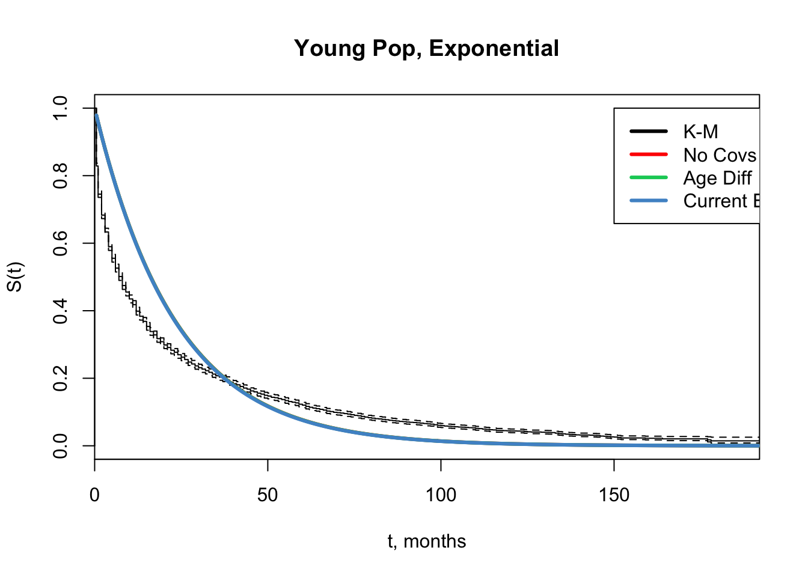
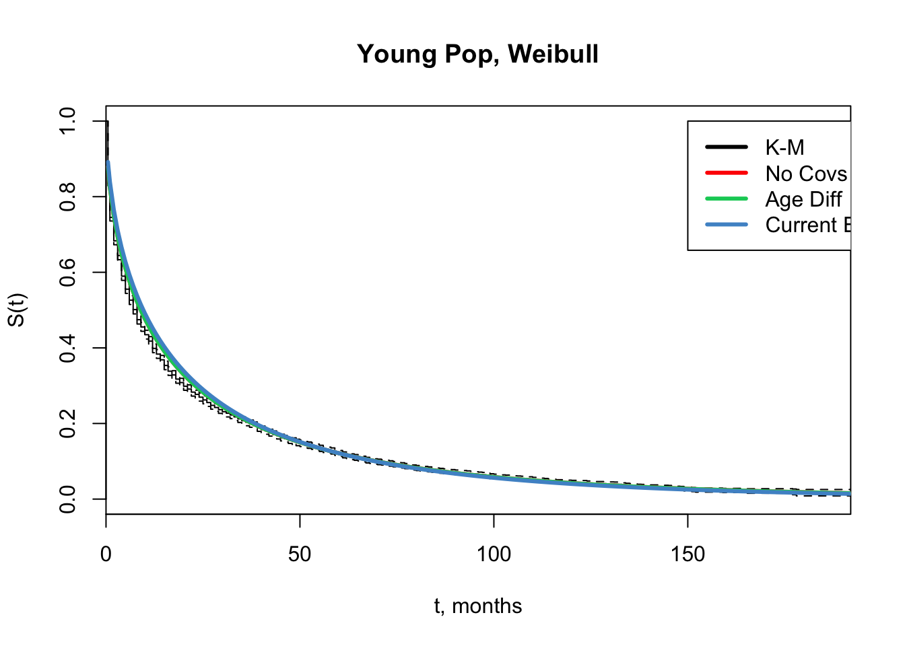

Chapter 5 Younger Population
This section explores models fit to the 15-29 year olds in NSFG, my population of interest to model in chapters 2 & 3 of dissertation.
Will likely stick to mixture model framework for network model in chapters 2 and 3.

## [1] "all models have same curve"
5.1 Latent Mixture Models
NOTE: these mixture models do NOT use NSFG survey weights